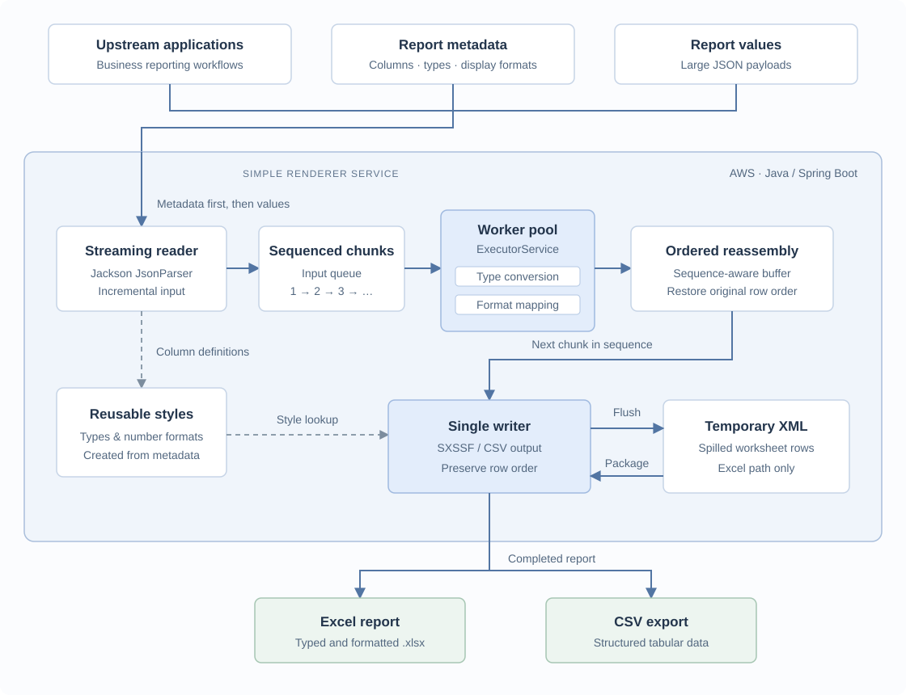

01 / Read incrementally
Keep the input moving
Jackson reads the JSON stream token by token. Rows are grouped into sequenced chunks so the service can start processing before the full dataset has arrived.
Goldman Sachs · Backend engineering
A one-week prototype that grew into a reporting service used by eight teams.
With reporting deadlines approaching and large reports running out of memory, I built a lightweight streaming renderer to test a simpler way forward. It helped us meet the deadline, avoid additional vendor licensing costs, and replace a heavier rendering path.
Our Asset & Wealth Management team had regulatory reporting deadlines coming up. Data arrived from several upstream systems, parts of the workflow were manual, and large report runs were failing with out-of-memory errors. We needed a reliable way to turn that data into the Excel and CSV files the business used.
The team was weighing broader rendering infrastructure and vendor tooling, including Adobe, which was already used elsewhere for templated reports. Those options made sense in a fragmented reporting environment. But before committing to them, I wanted to establish what was actually causing these reports to fail.
I focused on the immediate requirement: generate large, structured reports correctly and on time. In about a week, I built a Java prototype that processed JSON incrementally with Jackson instead of materializing the whole payload in memory.
I then compared its output with the existing flow and stress-tested it with payloads similar to the ones that had been failing. The results pointed to memory handling as the dominant bottleneck. A streaming approach could meet the requirement without the cost and integration work of a broader templating solution.
That evidence helped the team align around the lighter design. The prototype became the basis for a standalone service on AWS that other teams could use for their own reports.
The service accepts a JSON stream containing report metadata followed by rows. Metadata describes the columns, data types, and display formats, so different upstream applications can use the same renderer without a fixed template for each report.

01 / Read incrementally
Jackson reads the JSON stream token by token. Rows are grouped into sequenced chunks so the service can start processing before the full dataset has arrived.
02 / Transform in parallel
An ExecutorService pool handles data conversion and format mapping. Sequence identifiers preserve each chunk’s place in the report even when workers finish in a different order.
03 / Restore order
A reassembly buffer brings completed chunks back into sequence. A single writer appends the rows, keeping output deterministic and workbook changes on one thread.
04 / Stream the output
Column styles are prepared from metadata and reused. For Excel, Apache POI SXSSF spills older worksheet rows to temporary XML, then packages the final XLSX file. CSV follows a sequential text-output path.
Keeping report definitions separate from row values let the renderer serve different reporting workflows. The upstream application supplied the business data and column schema; the service handled conversion, formatting, and file generation.
Transformation could run concurrently, while writing remained sequential. The coordination point was reassembly: later chunks could finish early, but rows still had to reach the output in their original order.
Streaming output also introduced a tradeoff: temporary disk I/O and final XLSX packaging still had a cost. Moving to a streaming pipeline addressed the memory pressure, while the writer and disk remained important throughput constraints.
Performance alone would not make the change safe. I regression-tested generated reports against the existing flow to check that the outputs still matched the business requirements. Because the input path also moved to a more scalable JSON schema, I tested that transformation separately.
Stress tests exercised payload sizes representative of the failing runs. Together, the correctness and scale checks gave the team evidence that the simpler approach could handle real reporting workloads.
Regression checks against existing reports and validation of the changed input transformation.
Large-payload runs to check generation time and reliability under the conditions that had caused failures.
The renderer handled 5GB+ JSON inputs and processed 100K+ rows in under four minutes on the reporting workloads. It helped us meet the reporting timeline, avoided additional Adobe licensing costs for this use case, and helped phase out the older, heavier rendering path.
By the time I left Goldman Sachs, eight teams were using it for similar internal reporting workflows. A prototype built to answer one technical question had become a reusable service.
What stayed with me was the value of testing the constraint early. The prototype made the decision concrete: the team could compare correct outputs and large-payload behavior before taking on a bigger architectural change.